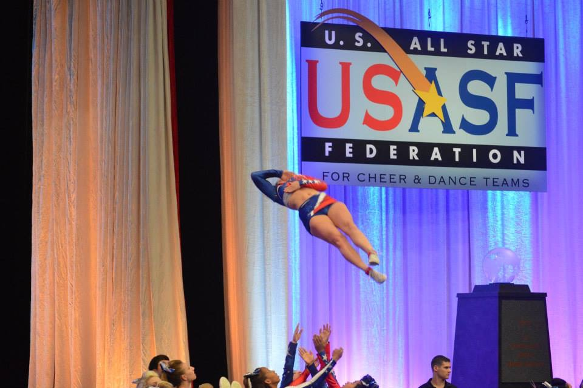
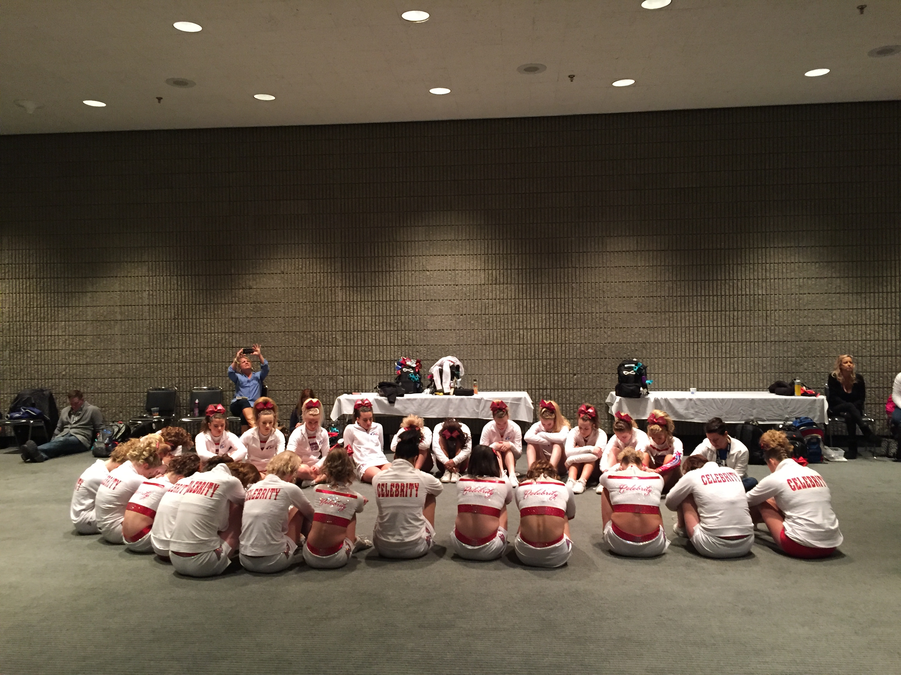

Competitive Cheerleading is very different from sideline cheerleading. There isn't much shouting of cheers for another sports team. Instead, competitve cheerleading, as the name implies, involves competitions with two minute and thirty second length routines, which are practiced over and over again throughout a cheer season.
Each competitive cheerleading team is a part of a cheer gym. These cheer gyms have a variety of different leveled teams. For example, there is levels 1, 2, 3, 4, 4.2, and 5. In some instances, there may be a level 6 team. However, those teams are mainly college-aged individuals or older. Each level determines what stunting skills and tumbling skills are required and allowed and also determines the expected executions of other elements, such as jumps, dance and overall routine flow.

The Blue Mat is a primary symbol of competitve cheerleading. The Blue Mat is a spring floor with 7 panels. Cheer gyms have at least one of these set up in their gym due to the fact that these are what cheerleaders compete on at competitions. Being centered is one of the most important parts of the visual aspect of a routine, and teams may spend whole practices just practicing formations to make sure that everything and everyone is centered and in the right place.

Each cheer season has a different number of competitions. Within each level there are a few elite competitions that teams can compete to be invited to. For example, there is The Summit and Worlds. The Summit is a competition that takes place in Disney World and levels 1, 2, 3, 4 and 4.2 are invited to compete in this competition. Worlds (arguably the biggest competition in the cheer world) also takes place at Disney World and levels 5 and 6 are invited to compete here. In order to be invited to these two competitions, you must receive a bid. There are three kinds of bids: 1.) At-Large (no money is given) 2.) Partial Paid ($250 is rewarded to each athlete on the team) 3.) Full Paid (Hotel, Disney Hopper Pass, and competition fees paid for each athlete on a team). In order to get invited to one of these competitions, teams must attend a competition that awards a bid. Being invited to these competitions is a goal that many set out to achieve. (Below is my old team and me winning a full paid bid to Worlds)

Teamwork is the driving force behind cheerleading. Without a well cohesive team, routines will not come together. Every athlete on the floor must feel like they are apart of a team, a piece of a whole, in order to feel confident, passionate, and able in the skills that they are performing on the floor. Establishing teamwork is an essential aspect of cheerleading, and teams who do not get along and are not there for each other find it hard to be successful. No matter who your closest friends are, the lasting bonds of being on a team with someone are forever.
